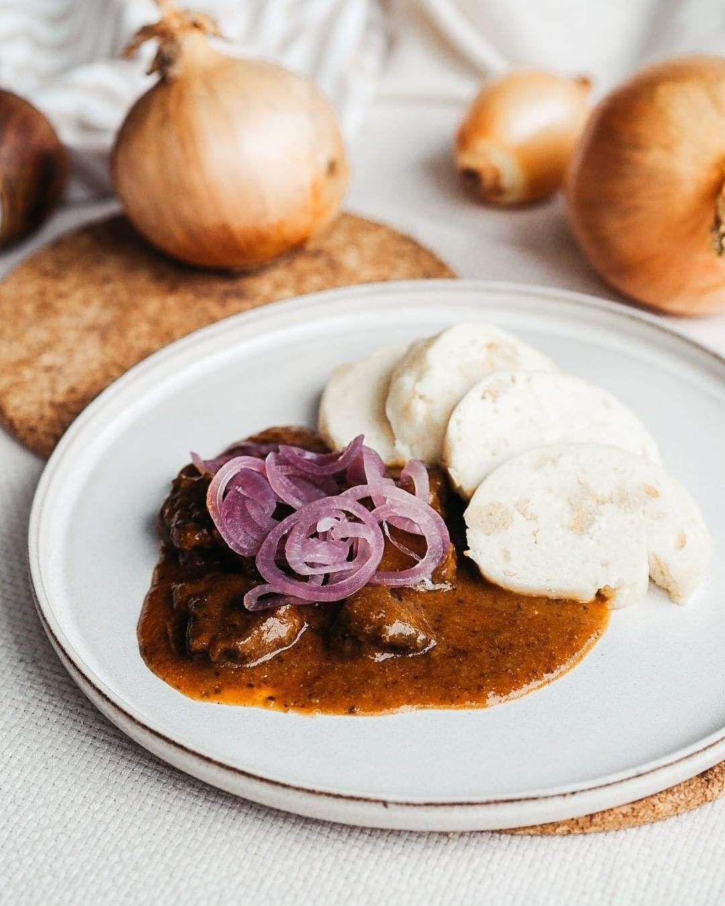

Maďarský guláš podľa @bezpracekolace.cz — Normy Jedál
Jaké jídlo máte v oblibě, ale málokdy si jej doma připravujete?
Pokud patříte mezi ty, co nechtějí ztrácet čas čištěním masa a přípravou domácích knedlíků, vyzkoušejte náš poctivý maďarský guláš s hovězím masem.
Žádná zdrclá omáčka, žádné oschlé knedlíky - čerstvé jídlo na talíři do 10 minut.
-
-
-
#bezpracekolace #rozvozjidla #uvarsisam #kvalitnisuroviny #jednoduchejidlo #plating #foodstyling #stonescatering #jidlo #jidlobezprace #rychlejidlo #dnesvarim #foodinspirace #praguefood #praguetips #jidloodsefkuchare #fooddelivery #finedinningprague #hostina #gulas #madarskygulas #hovezimaso #knedliky #houskoveknedliky